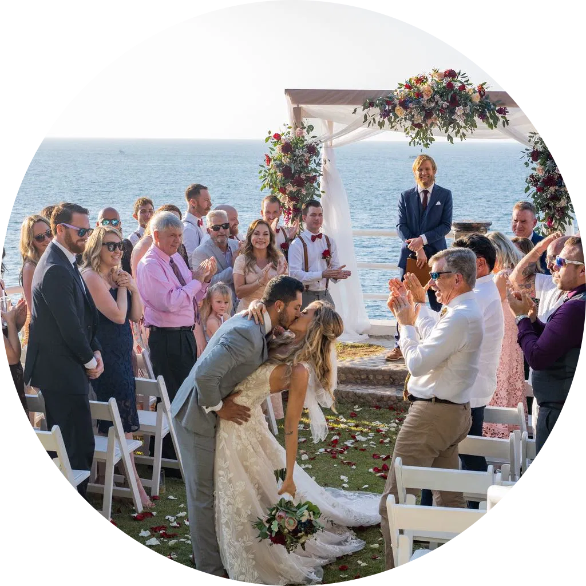

Historia:
Precediendo 3 generaciones familiares
de fotógrafos en Puerto Vallarta,
Life Cinetography tiene como antecedente
un amplio repertorio de experiencias
y conocimientos de campo que se
han venido puliendo a lo largo de
más de 35 años de la creación de la
empresa madre de Life Cinematography
la cual es Foto Video Diang.

MISIÓN:
Nuestra misión es clara: capturar,
preservar y transformar esos recuerdos
fugaces a momentos eternos que puedan
rememorar a lo largo del tiempo
Visión:
Nuestro enfoque más importante es
rescatar esas emociones y sentimientos
efímeros, es decir, pasajeros del
momento, acentuándolos para
transportarnos a ese momento.